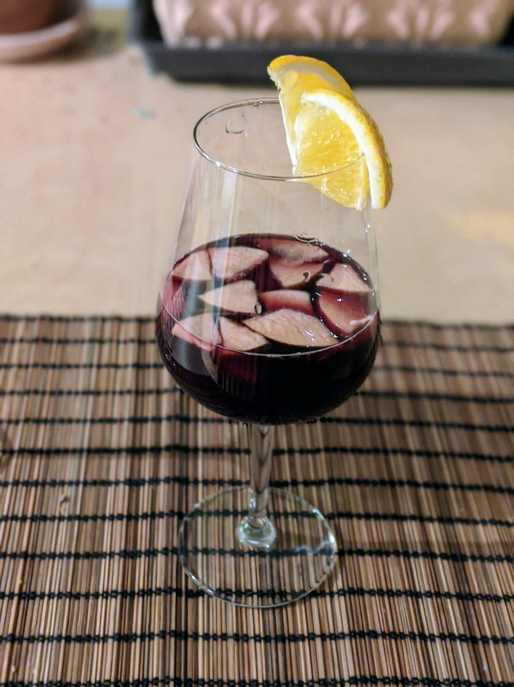

Sangria

Pour 4-5 grands verres :
- Une bouteille de vin rouge, plutôt sec
- Trois petites oranges
- Une petite pomme
- Un petit verre de brandy
- 50g de sucre roux
- (Facultatif) Des glaçons
- Laver et couper la pomme et une des oranges (sans les éplucher) en morceaux assez petits, par exemple en faisant des tranches d'un demi-centimètre puis en coupant chaque tranche en six ou huit. Laisser la peau sur les fruits coupés.
- Les mettre au fond d'une cruche avec le sucre, mélanger à la cuillère pendant environ une minute.
- Presser les deux oranges, ajouter leur jus avec le brandy dans la cruche. Bien mélanger pour que le sucre finisse de se dissoudre.
- Ajouter le vin, puis rectifier un peu si on veut en rajoutant un peu de sucre, de jus d'orange ou de brandy.
- Ajouter la glace à la fin si on veut, servir immédiatement. Ça se garde un ou deux jours mais c'est meilleur frais.
Remarque : si on a pas de brandy, on peut utiliser du cognac, du Cointreau, ou même du porto.